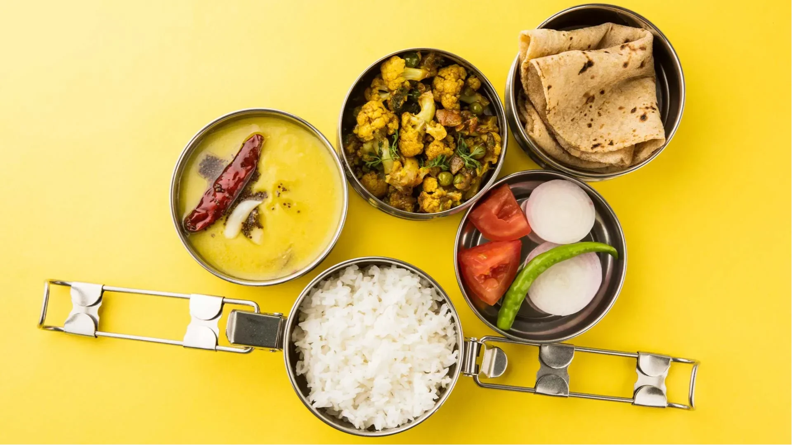

Book a cook service connects clients with professional chefs or home cooks for personalized meal preparation. Users can schedule cooking sessions based on their preferences, dietary needs, and occasions.
Regular Tiffin
Regular tiffin service is a convenient meal delivery system that provides daily, freshly cooked meals to individuals or families. These services typically offer a variety of meal options, tailored to different dietary preferences and needs.

Customize Tiffin
Custom tiffin service offers a personalized meal delivery experience, tailored to individual preferences and dietary needs. Unlike regular tiffin services, custom tiffin services allow customers to choose specific dishes, ingredients, and portion sizes.